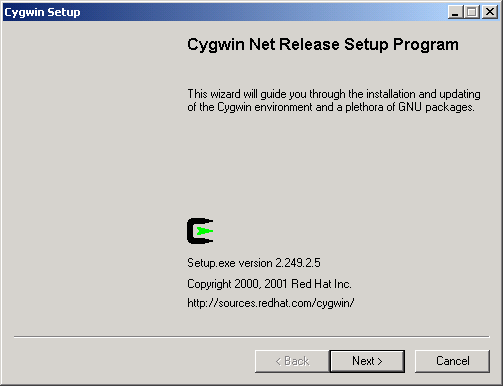
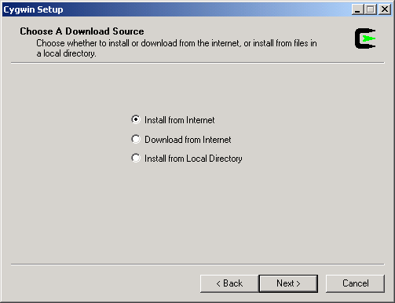
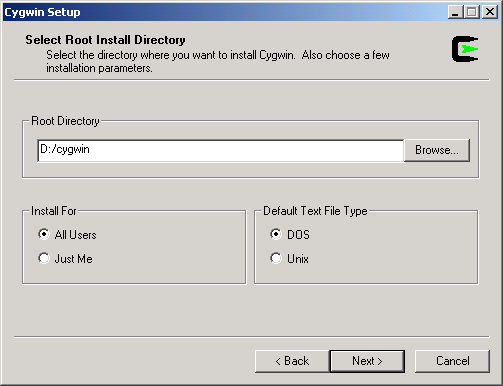
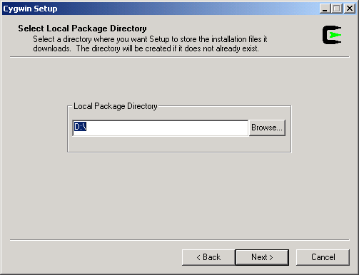
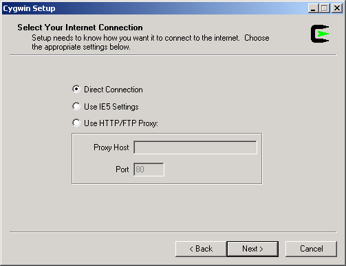
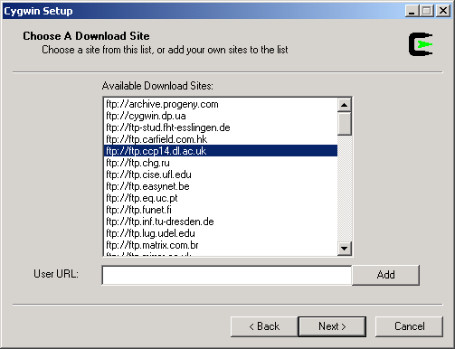
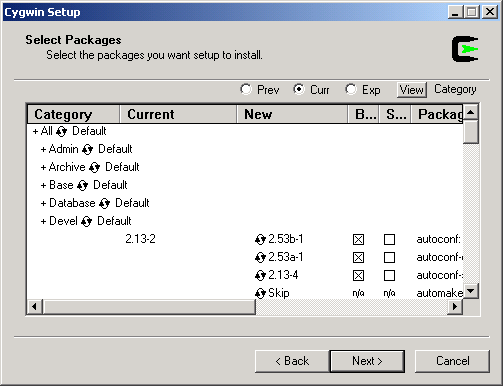
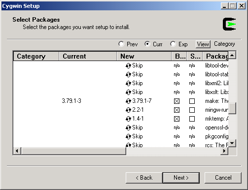
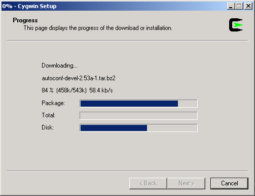

The Logiqx environment relies heavily on the use of Unix scripting so you must install Cygwin!
Run http://www.cygwin.com/setup.exe
You will see this screen:

Press 'Next >'.

Press 'Next >' (Install from Internet).

Choose the location that you want to install to, ensure that 'DOS' is selected and then press 'Next >'.

Choose the location that you want to download the installation files to and then press 'Next >'.

Press 'Next >' (Direct Connection).

Select a download site and press 'Next >'.

Open up the 'Devel category using the '+' gadget.

Ensure that 'make' is selected (denoted by a cross) and press 'Next >'.

Watch CygWin install and once complete, it will tell you!
Windows 95 or 98
SET PATH=%PATH%;c:\cygwin\bin
Windows NT, 2000 or XP (do not use c:\autoexec.bat, that is naughty, lol)
I only have Windows 2000 as reference but NT and XP are almost identical...
Note: On NT/2000/XP there is no need for a reboot (if you followed my steps above).
Open a DOS prompt and use the 'ls -l' command to test your CygWin installation. This should show a Unix-style directory listing.